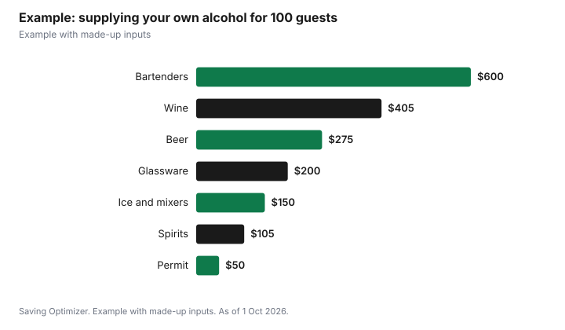

Weddings · Canada
Buying Your Own Wedding Alcohol in Ontario: Quantities, Returns and Permits

In Ontario, you can supply your own wedding alcohol if your venue allows it and you get a special occasion permit: $50 a day if guests drink free, or $150 a day if you sell drinks. The AGCO requires you to buy it in Ontario from an LCBO store, LCBO agency store, The Beer Store or an authorized manufacturer's store, and to keep the permit and receipts at the event. Unopened bottles can go back to the LCBO within 30 days with the original receipt, and you will need the permit and payment records. You also need bartenders, ice, glassware, any insurance your venue requires, and a realistic drink count.
Key takeaways
- Check that the venue allows outside alcohol and has no liquor licence of its own.
- Permit: $50 a day no-sale, $150 a day sale; apply at least 10 days before a private event.
- Buy in Ontario from LCBO, agency, Beer Store or authorized manufacturer stores.
- LCBO returns: unopened, saleable, original receipt, within 30 days, photo ID.
- Homemade wine or beer can be served free at a wedding if a family member made it.
- Example with made-up inputs: an order for 100 guests.
When you can supply your own
Licensed venues, such as hotels, banquet halls and restaurants, sell alcohol under their own licence; ask whether they allow any outside alcohol, for example wine under an AGCO bring-your-own-wine endorsement, which lets staff open and serve sealed, commercially made wine with a meal. Unlicensed venues, such as many community halls, barns, parks and private estates, may let you supply your own under a special occasion permit. A private residence that is not open to the public does not need a permit for invited guests.
Special occasion permits
| Rule | Detail |
|---|---|
| No-sale permit | $50 a day; guests not charged for drinks or admission |
| Sale permit | $150 a day; cash bar, drink tickets sold or a cover charge |
| Private event | Invited guests only; not advertised |
| Apply by | At least 10 days before a private event |
| Service hours | 9 a.m. to 2 a.m. |
| Applicant | 19 or older; fees non-refundable |
| Outdoor or tented | Written notice to clerk, police, fire and health 30 days before (under 5,000 a day); building department if a tent |
Where to buy and what to keep
The AGCO says liquor sold or served at a permitted event must generally be bought in Ontario through a government store or an authorized store, which includes LCBO stores, LCBO agency stores, The Beer Store and authorized manufacturers' retail stores. Keep the permit and product receipts available during the event for compliance officials. Unconsumed liquor must be removed from the premises at the end of the event.
Homemade wine and beer
Homemade wine and beer can be served but not sold at a wedding, anniversary or other family occasion. It must be made by a member of the family hosting the event, and the permit holder must have received it free of charge.
Returns
The LCBO's return policy accepts products in saleable condition with the original receipt within 30 days of purchase. Returns require your name, address, phone number and signature, and valid government-issued photo ID; refunds go back to the original payment method. For alcohol bought under a permit, the AGCO and LCBO say to bring the permit and payment records too. Keep cases sealed and unchilled where possible so they stay saleable, and ask the store about its process before the wedding.
Quantity planning
Plan in standard drinks. The Canadian Centre on Substance Use and Addiction defines a standard drink as 341 ml of 5% beer, 142 ml of 12% wine or 43 ml of 40% spirits. A 750 ml bottle of 12% wine holds about five standard drinks. Estimate guests who drink, hours of service and drinks per hour, then split by beer, wine and spirits based on your crowd. Because unopened product can be returned within 30 days, it is reasonable to buy a little extra, but returns need the receipt and saleable condition.
| Drink | One standard drink |
|---|---|
| Beer, 5% | 341 ml (one regular bottle) |
| Wine, 12% | 142 ml |
| Spirits, 40% | 43 ml |
Bartenders and liability
Hire bartenders who will check ID, pace service and stop serving visibly intoxicated guests. Smart Serve training is not required for permit holders but is available. Ontario does not require permit holders to carry party liability insurance, but venues often do, and as the permit holder you are responsible for following the rules. Ask your insurer about special event liability coverage, and plan safe rides home.
Who does what on the day
Assign one sober person, not the couple, to be responsible for the bar: receiving the delivery, keeping the permit and receipts on hand, briefing bartenders, watching stock and packing unopened cases for return. Agree in advance when last call happens and who takes leftover opened bottles home, since unconsumed liquor must leave the venue at the end of the event.
Extras to budget
- Ice, coolers and bins.
- Glassware rental or quality disposables.
- Mixers, garnishes and non-alcoholic drinks.
- Bartender wages and any travel fee.
- Event liability insurance if the venue requires it.
- Transport from the store and back for returns.
Example with made-up inputs
These numbers are an example with made-up inputs. For 100 guests, 85 of whom drink, over five hours at an average of one standard drink per hour for the first two hours and half a drink per hour after that: 85 x 3.5 = about 298 standard drinks. Split 45% wine, 40% beer and 15% spirits: 134 wine servings (27 bottles), 119 beers (5 cases of 24) and 45 spirit servings (about 2.6 bottles of 750 ml, so 3). At made-up prices of $15 a bottle of wine, $55 a case and $35 a bottle of spirits, that is $405, $275 and $105, or $785. Add a $50 permit, two bartenders at a made-up $300 each, ice and mixers $150 and glassware $200: $1,785.
| Item | Amount |
|---|---|
| Wine, 27 bottles | $405 |
| Beer, 5 cases | $275 |
| Spirits, 3 bottles | $105 |
| Permit (no-sale) | $50 |
| Two bartenders | $600 |
| Ice and mixers | $150 |
| Glassware | $200 |
| Total | $1,785 |

Steps
- Confirm the venue allows outside alcohol.
- Apply for the right permit at least 10 days before.
- Estimate standard drinks and split by type.
- Buy from an authorized Ontario store and keep receipts.
- Hire bartenders and confirm insurance.
- Return unopened product within 30 days with receipts and the permit.
Common mistakes
- Buying alcohol outside Ontario or from an unauthorized seller.
- Selling drink tickets on a no-sale permit.
- Chilling or opening cases you might return.
- Losing receipts.
- Missing the outdoor notice letters for a tented event.
Related: how much alcohol to buy and special occasion permits.
Sources
- helloLCBO, Special Occasion Permit (SOP) FAQs, hellolcbo.com, as of 1 Oct 2026.
- helloLCBO, Return Policy, hellolcbo.com, as of 1 Oct 2026.
- Alcohol and Gaming Commission of Ontario, Section 8: Purchase and storage of liquor for a SOP event, agco.ca, as of 1 Oct 2026.
- Canadian Centre on Substance Use and Addiction, Canada's Guidance on Alcohol and Health, ccsa.ca, as of 1 Oct 2026.
- Guest counts, drink rates, prices and staffing costs in the example are made-up inputs.
Frequently asked questions
Can I bring my own alcohol to my wedding in Ontario?
Yes, if the venue allows it and you get a special occasion permit, unless it is a private residence.
Where must I buy wedding alcohol under a permit?
Generally in Ontario from an LCBO store, LCBO agency store, The Beer Store or an authorized manufacturer's store.
Can I return unopened wedding alcohol to the LCBO?
Yes, within 30 days with the original receipt, in saleable condition, with photo ID. Bring the permit and payment records too.
Can we serve homemade wine at our wedding?
Yes, if a family member of the host made it and it is given free. It cannot be sold.
How many drinks are in a bottle of wine?
About five standard drinks in a 750 ml bottle of 12% wine.
Do I need liability insurance?
Ontario does not require it for permit holders, but many venues do.
Researched and drafted with AI assistance and fact-checked against official Canadian sources. How we create content.